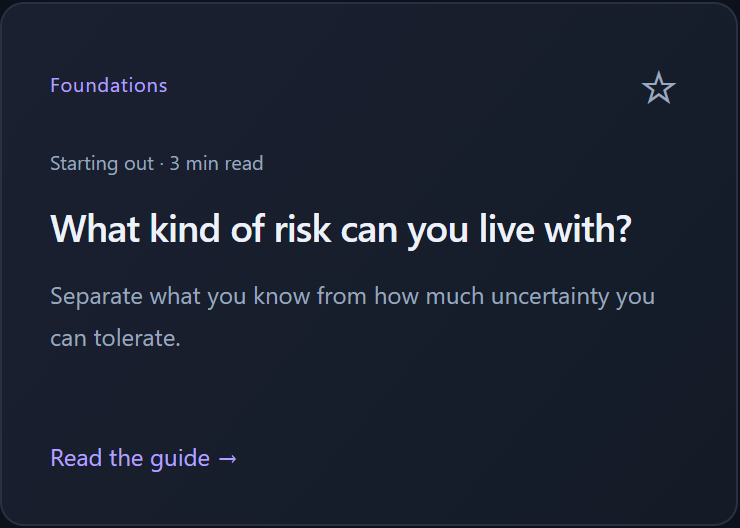
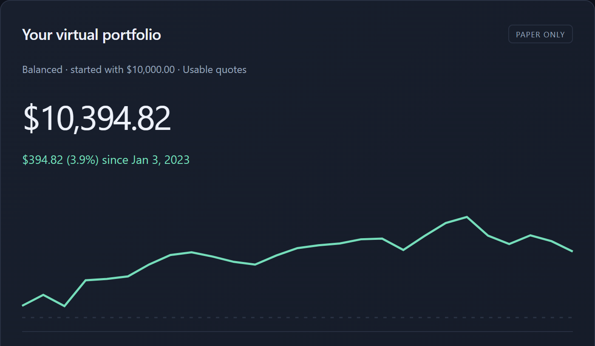
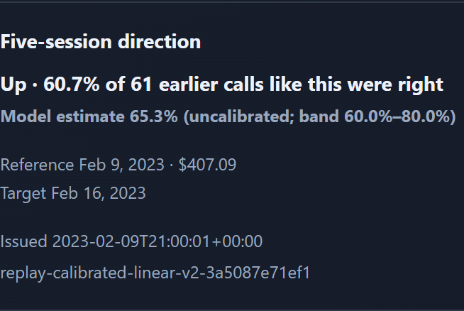

Written down first
Every forecast is stored before its outcome exists and is never rewritten, wrong ones included. Retraining only changes the next forecast.
MarketLens writes every forecast down before the outcome is known, then scores it on the same days against always guessing “the market goes up”.
The model I trained, after almost four years of real prices: no measurable difference.
2,871 five-session calls · US stocks, Treasury bonds and gold · January 2023 to November 2026
Three rules make the answer trustworthy, whatever it turns out to be.
Every forecast is stored before its outcome exists and is never rewritten, wrong ones included. Retraining only changes the next forecast.
My model competes with always up, momentum and last close. Each sees only the days up to its call and is scored on exactly the same days and markets.
A winner is named only when the whole likely range of the difference sits on one side of zero, and never before 30 shared trading days.
The measurement itself is tested: 51 automated tests, and 18 deliberate bugs planted in the code were all caught.
A forecast is worth nothing until it has a record against the simplest guess.
From 2023 to 2026 markets rose more often than they fell, so “always up” was right a little more than half the time. A forecast that is right slightly more than half the time can still be no better than that.
So before you trust a forecast, from an app, a newsletter or a confident friend, ask for its record against “always up” on the same days. MarketLens shows that record for every forecast it makes, including its own.
Around the measurement, MarketLens is a free practice space for beginners. Everything runs on your own computer, with virtual money only.
Your goal, your experience and your comfort with risk shape the first page you see.

Risk, diversification, bonds, gold, buy-and-hold and more. Search them, save them for later and mark them done. Eight of them link a public source; the ninth explains MarketLens's own method.

Choose a Conservative, Balanced or Growth mix and any amount from $100 to $1,000,000. Follow today's free quotes, or step through real trading days one at a time in the offline historical replay.

Each market gets a five-session Up or Down call and a next-session price estimate, shown with how often earlier calls like it were right.

MarketLens is a local app, not a website: it runs on a computer, not on a phone. It is tested on Windows; the macOS and Linux commands follow the README but have not been tested.
# get it
git clone https://github.com/esst-prog2/MarketLens.git
cd MarketLens
# install once
python -m venv .venv
.venv\Scripts\python -m pip install -r requirements.txt
# run
.venv\Scripts\python app.py# get it
git clone https://github.com/esst-prog2/MarketLens.git
cd MarketLens
# install once
python3 -m venv .venv
.venv/bin/python -m pip install -r requirements.txt
# run
.venv/bin/python app.pyThen open http://127.0.0.1:8080 in your browser. Stop it with Ctrl+C.
--port 8081 to the run command and open http://127.0.0.1:8081 instead.